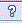

Basic Navigation
In this Topic ShowHide
FAN$IER utilizes familiar user
interface standards that are common to all windows, forms and dialogue
boxes. These include icons for controlling window sizing and exiting.
A Title Bar appears at the top
of all FAN$IER windows. The
application or form name is displayed here, along with some of the following
Common Window Control icons:
Common Window Controls

|
Minimize |
Shrinks the current form and places
it at the bottom of the Main
Window. The icon will be replaced with the Maximize
icon. Located at top right corner of window. |

|
Maximize |
Expands the form to the full size
of the Main
Window. The icon will be replaced with the Minimize
icon. Located at top right corner of window. |

|
Original Size |
Returns the form to its original
size and location within the Main Window.
Located at top right corner of window. |

|
Close |
Closes and exit the form. Located
at top right corner of window. |
 |
Help |
Opens a Help page specific to
the Wndow contents. Located at top right corner of window. |
Command Buttons
A command button contains key words or a picture that describe the action
it triggers. The associated action occurs immediately when the command
button is clicked unless it contains an ellipsis (...). The ellipsis
indicates that another dialog box will appear.
All commands can be accessed with a mouse. Some of the more commonly
used commands can also be accessed using a Hot Key
combination
Common Command Buttons

|
OK |
Accepts the data as currently
displayed on the form and closes or exits the form. |

|
Cancel |
Closes or exits the form without
accepting any changes to the data displayed on the form. |
Hot Keys
Hot keys
are keyboard short cuts to menus or commands.
Hot Key
combinations are also displayed in brackets after a menu or command title
throughout FAN$IER, e.g., (Ctrl-S) or (Alt-F)